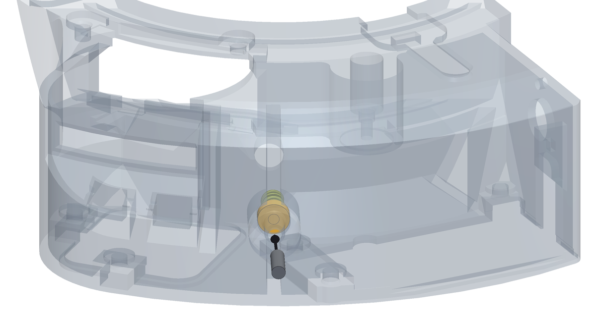

Capitolo 8
Regolare il precarico
La molla è nella sua sede da prima che entrasse il braccio. Ora che braccio e motore ci sono e lei ha qualcosa contro cui spingere, il grano dietro la sede stabilisce quanto forte la frizione preme sul disco dei filtri.
Cosa serve
Pezzi
- 1×grano M4 · precaricoM4 × 14, GRANO a brugola senza testa (dal dorso dello scodellino all'imbocco del bosso ci sono 12,1)
Attrezzi
- chiave a brugola da 2,0 mm per il grano del precarico
Passo 1 Regola il precarico con il grano


- Il grano M4 × 14 entra nell'inserto M4 della parete esterna della scatola, dietro la molla, e preme sul fondo dello scodellino. Serve una chiave a brugola da 2,0 mm.
- Avvitalo finché senti la molla che comincia a caricarsi, poi dagli ancora 2,4 mm: la molla passa da 13,5 a 11,1 mm e spinge con circa 13,5 N. Attraverso la leva del braccio sono circa 7 N della frizione sul disco, una volta montata la ruota. Da lì lo scodellino ha 2,0 mm di corsa in ciascun verso, per aggiungere o togliere precarico.
- Controlla il braccio: deve ancora oscillare libero e tornare indietro da solo. Se si impunta, il problema è nel perno, non qui: torna al capitolo 5.
- La regolazione vera la farai nell'ultimo capitolo, con la ruota montata e il motore che gira. Adesso ti basta una molla carica, non una molla schiacciata.